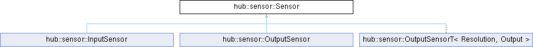
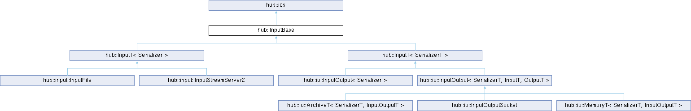
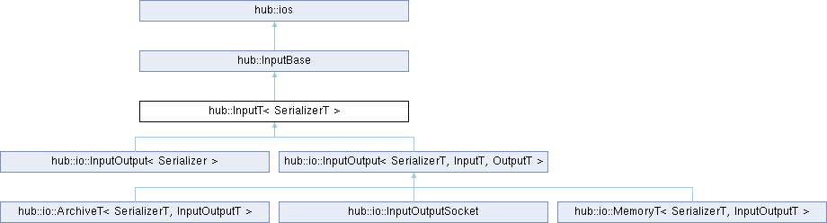
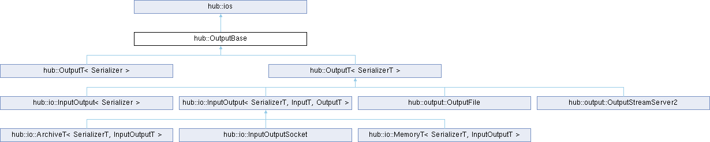
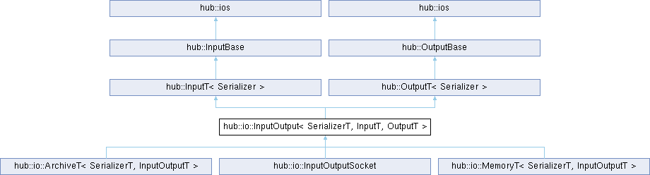

API Reference
Basics
Sensor
-
class Sensor
The Sensor class describes what a sensor can be, it’s defined from the constant specifities of a sensor and uses a communication bus to transmit the data.
Note
Not user instantiable class.
Subclassed by hub::sensor::InputSensor, hub::sensor::OutputSensor, hub::sensor::OutputSensorT< Resolution, Output >
-
inline const SensorSpec &hub::sensor::Sensor::getSpec() const
acqMsg
getSpec
- Returns:
acquisition according to the sensor spec resolution
- Returns:
sensor spec
SensorSpec
-
class SensorSpec
The SensorSpec class describes the sensor in its entirety, like the internal properties of a sensor. Such as the name of the sensor given by the manufacturer and the format/resolution of the measured data. This allows to describe how the data can be visualized and to standardize data that looks similar. Optional information can be added but does not influence the flow communication process.
Note
The sensor specifications are shared between input and output sensor.
Public Functions
-
inline SensorSpec(const std::string &sensorName, const Matrix &resolution, const MetaData &metaData = {})
- Parameters:
sensorName – [in] Given by the sensor manufacturer or user defined.
resolution – [in] Resolution of the corresponding sensor.
metaData – [in] Additional informations of the sensor and acquisition.
-
template<class Resolution>
inline SensorSpec(const std::string &sensorName, const Resolution &resolution, const MetaData &metaData = {}) - Parameters:
sensorName – [in] Given by the sensor manufacturer or user defined.
resolution – [in] Resolution of the corresponding sensor.
metaData – [in] Additional informations of the sensor and acquisition.
-
SensorSpec() = default
-
inline SensorSpec(const SensorSpec &sensorSpec)
-
- Parameters:
sensorSpec –
-
inline SensorSpec(const std::string &sensorName, const Matrix &resolution, const MetaData &metaData = {})
Instantiate examples :
// example of rgb camera sensor
hub::MetaData metaData;
metaData["iso"] = 100;
metaData["fov"] = 60.0;
using ResolutionCam = hub::MatrixXD<hub::format::RGB8, 1920, 1080>;
hub::sensor::SensorSpec rgbCamSpec { "rgbCam", ResolutionCam(), metaData };
// example of two-sensor 6 Degree-Of-Freedom (6DOF) motion tracking system
// with 2 sensors acquiring data at the same time (hardware synchronized timestamp)
using ResolutionTrack = hub::MatrixXD<hub::format::Dof6, 2>;
hub::sensor::SensorSpec trackingSystemSpec { "6DOF_Tracker", ResolutionTrack() };
// or
using ResolutionTrack2 = hub::MatrixTs<hub::format::Dof6, hub::format::Dof6>;
hub::sensor::SensorSpec trackingSystemSpec2 { "6DOF_Tracker", ResolutionTrack2() };
// example of sensor with many cameras (RGB and Infrared lenses in the same medium)
// cameras acquiring data at the same time (hardware synchronized timestamp)
hub::MetaData metaData;
hub::format::Mat4 offsetRGBLens {
1.0, 0.0, 0.0, 0.0,
0.0, 1.0, 0.0, 0.0,
0.0, 0.0, 1.0, 0.0,
0.0, 10.0, 20.0, 1.0 }; // offset specification between the 2 lenses (RGB and Infrared)
metaData["offsetRGBLens"] = offsetRGBLens;
using ResolutionDepth = hub::MatrixXD<hub::format::Z16, 640, 480>;
using ResolutionRGB = hub::MatrixXD<hub::format::RGB8, 1280, 960>;
using ResolutionInfrared = hub::MatrixXD<hub::format::Y8, 640, 480>;
using ResolutionMultiCam = hub::MatrixTs<ResolutionDepth, ResolutionRGB, ResolutionInfrared>;
hub::sensor::SensorSpec multiCamSpec {
"MultiCam (Depth, RGB, Infrared)", ResolutionMultiCam(), metaData };
Resolution
Dims
-
using hub::Dims = std::vector<int>
Dims.
Matrix
-
class Matrix
The Matrix class represents everything which can be represent as a matrix data is serialized during the declaration improve input/output transport process.
Subclassed by hub::sensor::Acquisition
Instantiate examples :
const auto resolutionVolume = hub::make_matrix<float>( 512, 512, 100 );
const auto resolutionCam = hub::make_matrix<hub::format::RGB8>( 640, 480 );
const auto resolutionAll = hub::make_matrix( resolutionVolume, resolutionCam );
MatrixXD
-
template<class Type, Size_t... Ns>
class MatrixXD : public hub::MatrixXDBase<Type, Ns...> The MatrixXD class represent nd array basic features.
Instantiate examples :
using ResolutionVolume = hub::MatrixXD<float, 512, 512, 100>;
using ResolutionCam = hub::MatrixXD<hub::format::RGB8, 640, 480>;
MatrixTs
-
template<class ...Types>
class MatrixTs The MatrixTs class represents a bunch of type, matrix able to merge type or matrices into single matrix everything is matrix at the end.
Instantiate examples :
using Resolution = hub::MatrixTs<int, int, double, float>;
OutputSensor
-
class OutputSensor : public hub::sensor::Sensor
The OutputSensor class describes what a sensor physically is. A sensor measures physical information from the environment around us. We declare a sensor with its intrinsic data and the transportable data format that the sensor driver proposes to export. The sensor transmits volatile and potentially unrecordable data. This class allows the data to be transmitted without being recorded so that it can be used in real time on various network machines.
todo: template class template <typename Output, typename Measures, typename Acquisition = Acquisition<Measures>> Todo clean all construction, template args … are not user friendly
Public Functions
-
template<class OutputT = output::OutputStream, typename = typename std::enable_if_t<std::is_base_of_v<hub::Output, OutputT>>, class ...Args>
inline OutputSensor(const SensorSpec &sensorSpec, const Args&... args) -
- Parameters:
sensorSpec –
args –
-
template<class OutputT, typename = typename std::enable_if_t<std::is_base_of_v<hub::Output, OutputT>>>
inline OutputSensor(const SensorSpec &sensorSpec, OutputT &output) -
- Parameters:
sensorSpec –
output –
-
template<class OutputT, typename = typename std::enable_if_t<std::is_base_of_v<hub::Output, OutputT>>>
inline OutputSensor(const SensorSpec &sensorSpec, OutputT &&output) -
- Parameters:
sensorSpec –
output –
-
inline void operator<<(const Acquisition &acq)
operator <<
- Parameters:
acq –
-
template<class OutputT = output::OutputStream, typename = typename std::enable_if_t<std::is_base_of_v<hub::Output, OutputT>>, class ...Args>
Instantiate examples :
using ResolutionCam = hub::MatrixXD<hub::format::RGB8, 640, 480>;
hub::sensor::SensorSpec sensorSpec2( "rgbCam", ResolutionCam() );
hub::sensor::OutputSensor outputSensor( sensorSpec2, "streamName" );
auto acq = outputSensor.acqMsg();
auto [start, end] = acq.clocks();
auto* const imgData = acq.get<hub::format::RGB8*>();
while (1) {
sensorAPI::updateTimestamp(start, end); // get latest clocks from sensor api
sensorAPI::fetchData((unsigned char*)imgData); // get latest image data from sensor api
outputSensor << acq;
}
InputSensor
-
class InputSensor : public hub::sensor::Sensor
The InputSensorT class represents the remote sensor. From any communication bus (file, RAM, socket) you have access to all the information specific to the sensors as well as the acquisition flow coming from the physical sensor. This class allows client applications to completely abstract from the notion of sensor and to be interested only in the carried data. This enables several applications to work simultaneously on the same data in real time. This also avoids the need to manage the drivers of each of the manufacturers of the sensors you wish to use.
todo: template class
Public Functions
-
template<class InputT>
inline InputSensor(InputT &input, InputT &input2) -
- Parameters:
input –
input2 –
-
template<class InputT>
inline InputSensor(InputT &&input, InputT &&input2) -
- Parameters:
input –
input2 –
-
inline void operator>>(Acquisition &acq)
operator >>
- Parameters:
acq –
-
template<class InputT>
Instantiate examples :
/// outputSensor
Acquisition
-
class Acquisition : public hub::Matrix
The Acquisition class represent sensor data acquired between start end end timestamps.
Public Functions
-
Acquisition() = default
-
Acquisition(Acquisition&&) = default
-
Acquisition(const Acquisition&) = delete
-
inline Acquisition &operator<<(const Acquisition &other)
operator <<
- Parameters:
other –
- Returns:
-
inline Acquisition operator<<(const Acquisition &other) const
operator <<
- Parameters:
other –
- Returns:
-
Acquisition() = default
IO
Input
 InputStream
-
class InputStreamServer2 : public hub::InputT<Serializer>, public hub::io::StreamServer2
The InputStreamServer2 class Describes an input communication from the server.
Warning
The communication is only possible if the stream (with the same name) is active within the server. That implies an OutputStream communicating data through the server.
Public Functions
-
explicit InputStreamServer2(int streamPort, const std::string &streamIpv4 = "127.0.0.1")
Login stream from streamer.
- Parameters:
streamPort – [in] correspond of the streamer port you want to log in
streamIpv4 – [in] correspond of the streamer ipv4 you want to log in
- Throws:
net::Socket::exception – when no streamer found (service is not running)
-
explicit InputStreamServer2(const std::string &streamName, int serverPort = HUB_SERVICE_PORT, const std::string &serverIpv4 = HUB_SERVICE_IPV4)
Login stream from server.
Warning
The hub service must be accessible, that means the server hub is running on a machine you know the ip and the oppened port of the service.
Warning
Stream you want to link (by their names) needs to be active in the server hub.
- Parameters:
streamName – [in] is an unique identifier name of stream.
serverPort – [in] is a running service port you want to use
serverIpv4 – [in] is a ip of running server
- Throws:
net::Socket::exception – when the server is not found or by loosing connection to the server. Also occur when stream you want to link is not connected to the server.
-
InputStreamServer2(const InputStreamServer2&) = delete
-
InputStreamServer2(InputStreamServer2&&) = default
Create from movable argument.
-
void startStream()
Start catching information from peer.
-
inline virtual bool isOpen() const override
isOpen
- Returns:
-
inline virtual void read(Data_t *data, Size_t len) override
read
- Parameters:
data –
len –
-
inline virtual void close() override
close
-
inline virtual bool isEnd() const override
isEnd
- Returns:
-
virtual void clear() override
clear
-
inline const io::Header &getHeader() const
Get header of stream.
- Returns:
header of stream Todo remove this when header is moved into input/output classes
Public Static Attributes
-
static struct hub::input::InputStreamServer2 not_endable
not_endable
-
explicit InputStreamServer2(int streamPort, const std::string &streamIpv4 = "127.0.0.1")
Instantiate example :
/// inputStream
Output
OutputBase
-
class OutputBase : public hub::ios
The OutputBase class is an ios interface specify basic output features.
Subclassed by hub::OutputT< Serializer >, hub::OutputT< SerializerT >
OutputStream
-
class OutputStreamServer2 : public hub::OutputT<>, public hub::io::StreamServer2
The OutputStreamServer2 class Describes an output communication to the server.
Instantiate example :
/// outputStream
InputOutput
ClientSocket
-
class ClientSocketI
The ClientSocketI class is an interface describing client socket basic features. Please use this interface if you want to propose more efficient socket implement than the current. We can compare during test and integrate your code if it more efficient.
Subclassed by hub::net::system::ClientSocketSystem
Public Functions
-
virtual void setIpv4(const std::string &newIpv4) = 0
Setter function.
- Parameters:
newIpv4 – [in] to set
-
virtual const std::string &getIpv4() const = 0
Getter function.
- Returns:
ip of server
-
virtual void setPort(int newPort) = 0
Setter function.
- Parameters:
newPort – [in] to set
-
virtual int getPort() const = 0
Getter function.
- Returns:
port of server
-
virtual void connect() = 0
Try connecting to the server.
-
virtual bool isConnected() const = 0
Check if connected.
- Returns:
if connected to the server
-
virtual void disconnect() = 0
Disconnect to the server.
-
virtual void write(const unsigned char *data, size_t len) = 0
write packet to the server
- Parameters:
data – [in] pointer of data array
len – [in] size of data array
-
virtual void read(unsigned char *data, size_t len) = 0
read packet from the server
- Parameters:
data – [out] pointer of data array
len – [in] size of data array
-
virtual void setIpv4(const std::string &newIpv4) = 0
ClientSocketSystem
-
class ClientSocketSystem : public hub::net::ClientSocketI, public hub::net::system::SocketSystem
The ClientSocketSystem class allows connection to remote server hubs. This class describes the functionality needed to open a remote communication.
Subclassed by hub::io::InputOutputSocket
File
-
class File
The File class is an encloser of a std file stream allowing to record or play acquisition streams in offline. This class can be use to play recorded stream as a real sensor stream.
Subclassed by hub::input::InputFile, hub::output::OutputFile
-
explicit hub::io::File::File(const char *filePath)
File constructor from a std::fstream, if you use an InputSensor uses the std::ios::in constructor option, if you use an OutputSensor the std::ios::out option when creating a std::fstream.
- Parameters:
filePath – is a file path on system
/// file
Format
Dof6
-
struct Dof6
The Dof6 class represents cartesian position with quaternion orientation (7 floats)
Public Functions
-
inline explicit constexpr Dof6(float _x = 0.0, float _y = 0.0, float _z = 0.0, float _w0 = 1.0, float _w1 = 0.0, float _w2 = 0.0, float _w3 = 0.0)
Dof6.
- Parameters:
_x –
_y –
_z –
_w0 –
_w1 –
_w2 –
_w3 –
-
inline auto toString() const
toString
- Returns:
Public Static Functions
-
static inline constexpr auto name()
name
- Returns:
Public Static Attributes
-
static constexpr auto id = Types::Format::DOF6
id
-
inline explicit constexpr Dof6(float _x = 0.0, float _y = 0.0, float _z = 0.0, float _w0 = 1.0, float _w1 = 0.0, float _w2 = 0.0, float _w3 = 0.0)
Mat4
-
struct Mat4
The Mat4 class is 4x4 matrix of float.
Public Functions
-
inline explicit constexpr Mat4(float a11 = 1.0, float a12 = 0.0, float a13 = 0.0, float a14 = 0.0, float a21 = 0.0, float a22 = 1.0, float a23 = 0.0, float a24 = 0.0, float a31 = 0.0, float a32 = 0.0, float a33 = 1.0, float a34 = 0.0, float a41 = 0.0, float a42 = 0.0, float a43 = 0.0, float a44 = 1.0)
Mat4.
- Parameters:
a11 –
a12 –
a13 –
a14 –
a21 –
a22 –
a23 –
a24 –
a31 –
a32 –
a33 –
a34 –
a41 –
a42 –
a43 –
a44 –
-
inline explicit Mat4(const float *array)
Create from array of float.
- Parameters:
array – [in] Array of float (row major)
-
inline auto toString() const
toString
- Returns:
-
inline const float *data() const
Getter function.
- Returns:
raw data pointer (row major)
Public Members
-
std::array<float, 16> m_array
m_array
Public Static Functions
-
static inline constexpr auto name()
name
- Returns:
-
inline explicit constexpr Mat4(float a11 = 1.0, float a12 = 0.0, float a13 = 0.0, float a14 = 0.0, float a21 = 0.0, float a22 = 1.0, float a23 = 0.0, float a24 = 0.0, float a31 = 0.0, float a32 = 0.0, float a33 = 1.0, float a34 = 0.0, float a41 = 0.0, float a42 = 0.0, float a43 = 0.0, float a44 = 1.0)
Client
Viewer
-
template<class InputStream>
class ViewerInterface The ViewerInterface class can be implement for user wanted to create own viewer using own server implement (ex: Mqtt viewer using mqtt service). This interface allow to compare performance of communication between different implements. For example we can compare the performance with the current server/viewer implements with Mqtt protocol during the tests. If you want to create your own server/viewer implements, please use this interface, we can integrate your implement if this one is better than the current implement. Thank you in advance.
Public Functions
-
explicit ViewerInterface(const std::string &name, ViewerHandler &&viewerHandler = ViewerHandler(), const std::string &serverIpv4 = HUB_SERVICE_IPV4, int serverPort = HUB_SERVICE_PORT, bool autoConnect = true)
Construct viewer with unified parameters corresponding of viewer features.
- Parameters:
name – [in] is used to identify viewer instance from others in server logs.
viewerHandler – [in] represents user events catcher
serverIpv4 – [in] is the ip of server you want to watch
serverPort – [in] is the port of server you want to watch
autoConnect – [in] is the startup option, true if you want to check for server after creation, false if you don’t want to connect to server now
-
virtual ~ViewerInterface()
-
virtual void setIpv4(const std::string &ipv4)
basic feature able to change ip during process (ex: change to backup server if first server is broken, ping server is running, ip scans). This function change the ip of the server you want to connect.
Warning
You can’t change current ip if server is connected.
- Parameters:
ipv4 – [in] is the new ip of server you want to watch.
-
virtual void setPort(int port)
Setter function. This function change the service port of the server you want to connect.
Warning
You can’t change current port if server is connected.
- Parameters:
port – [in] is the new service port you want to watch.
-
virtual const std::string &getIpv4() const
Getter function.
- Returns:
The current ip of the server is trying to connect or connected.
-
virtual int getPort() const
Getter function.
- Returns:
The current service port is trying to connect or connected.
-
virtual void setAutoConnect(bool autoConnect)
Setter function.
- Parameters:
autoConnect – [in] is a common feature. If auto connection is on, viewer is looking/pinging for current ip and port until server is connected.
-
virtual bool isConnected() const
Check for server status.
- Returns:
True if the server is connected.
False otherwise.
-
void startStream(const std::string &streamName)
User of Viewer class want to watch active stream.
Warning
streamName has to be active on server
- Parameters:
streamName – [in] user want to watch
-
void stopStream(const std::string &streamName)
User of Viewer class want to stop watching stream.
- Parameters:
streamName – [in] user want to stop watching
-
virtual void setProperty(const std::string &streamName, const std::string &objectName, int property, const Any &value)
Set render options from user of Viewer class. These options are shared to other viewer of the same stream.
- Parameters:
streamName – [in] the user want to change option
objectName – [in] the user want to change option
property – [in] the user want to change property
value – [in] the user want to set
-
int nStream() const
Getter function.
- Returns:
The number of connected stream
-
int nStreaming() const
Getter function.
- Returns:
The number of watching stream. Number of watching stream is always less or equal than the number of connected stream
-
void printStatus() const
Print current status of viewer.
-
bool hasStream(const std::string &streamName)
Check if stream is connected.
- Parameters:
streamName – [in] user wants to check if active or not
- Returns:
true if streamName is connected
False otherwise
-
std::set<std::string> getActiveStreams() const
Getter function.
- Returns:
The number of watching streams
-
explicit ViewerInterface(const std::string &name, ViewerHandler &&viewerHandler = ViewerHandler(), const std::string &serverIpv4 = HUB_SERVICE_IPV4, int serverPort = HUB_SERVICE_PORT, bool autoConnect = true)
ViewerServer2
-
class ViewerServer2 : public hub::client::ViewerInterface<input::InputStreamServer2>
The ViewerServer2 class is an implement of ViewerInterface compatible with Server implement.
Public Functions
-
explicit SRC_API ViewerServer2(const std::string &name, ViewerHandler &&viewerHandler, const std::string &serverIpv4 = HUB_SERVICE_IPV4, int serverPort = HUB_SERVICE_PORT, bool autoConnect = true)
Construct viewer with unified parameters corresponding of viewer features.
- Parameters:
name – [in] is used to identify viewer instance from others in server logs.
viewerHandler – [in] represents user events catcher
serverIpv4 – [in] is the ip of server you want to watch
serverPort – [in] is the port of server you want to watch
autoConnect – [in] is the startup option, true if you want to check for server after creation, false if you don’t want to connect to server now
-
SRC_API ~ViewerServer2()
-
virtual void setIpv4(const std::string &serverIpv4) override
basic feature able to change ip during process (ex: change to backup server if first server is broken, ping server is running, ip scans). This function change the ip of the server you want to connect.
Warning
You can’t change current ip if server is connected.
- Parameters:
ipv4 – [in] is the new ip of server you want to watch.
-
virtual void setPort(int serverPort) override
Setter function. This function change the service port of the server you want to connect.
Warning
You can’t change current port if server is connected.
- Parameters:
port – [in] is the new service port you want to watch.
-
virtual void setProperty(const std::string &streamName, const std::string &objectName, int property, const Any &value) override
Set render options from user of Viewer class. These options are shared to other viewer of the same stream.
- Parameters:
streamName – [in] the user want to change option
objectName – [in] the user want to change option
property – [in] the user want to change property
value – [in] the user want to set
-
virtual void setAutoConnect(bool autoConnect) override
Setter function.
- Parameters:
autoConnect – [in] is a common feature. If auto connection is on, viewer is looking/pinging for current ip and port until server is connected.
-
explicit SRC_API ViewerServer2(const std::string &name, ViewerHandler &&viewerHandler, const std::string &serverIpv4 = HUB_SERVICE_IPV4, int serverPort = HUB_SERVICE_PORT, bool autoConnect = true)
Instantiate examples :
/// viewer
Asker
-
class AskerInterface
The AskerInterface interface allow user to get some information from connected sensor to the server.
Subclassed by hub::client::AskerServer2
Public Functions
-
virtual std::list<std::pair<std::string, sensor::SensorSpec>> listStreams() = 0
Get the active streams from the server.
- Returns:
List of connected streams from the server
-
virtual sensor::Acquisition getAcquisition(const std::string &streamName) = 0
Get last acquired data from connected stream from the server.
Warning
streamName you want to retrieve data has to be connected to the server
- Parameters:
streamName – [in] is the stream you want to get the acquisition
- Returns:
Latest acquisition shared to the server by the sensor stream
-
virtual std::list<std::pair<std::string, sensor::SensorSpec>> listStreams() = 0
AskerServer2
-
class AskerServer2 : public hub::client::AskerInterface
The AskerServer2 class is an implement of AskerInterface linking with ServerImpl server implement.
Public Functions
-
explicit AskerServer2(const std::string &ipv4 = HUB_SERVICE_IPV4, int port = HUB_SERVICE_PORT)
AskerServer2 will connect to the server with specific ip and port.
Warning
send Socket exception if server not found
- Parameters:
ipv4 – [in] is the ip of server (ex: “127.0.0.1” for local server)
port – [in] is the openned port for the hub service running on server you want to connect (HUB_SERVICE_PORT by default)
-
~AskerServer2()
-
virtual std::list<std::pair<std::string, sensor::SensorSpec>> listStreams() override
listStreams
- Returns:
-
virtual sensor::Acquisition getAcquisition(const std::string &streamName) override
getAcquisition
- Parameters:
streamName –
- Returns:
-
explicit AskerServer2(const std::string &ipv4 = HUB_SERVICE_IPV4, int port = HUB_SERVICE_PORT)
Instantiate examples :
/// asker